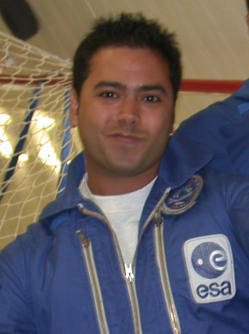

Optical AIV Engineer
Leading optical Assembly, Integration & Verification for ESA's Comet Interceptor mission. Specializing in precision interferometry with demonstrated sub-picometer stability — pushing the boundaries of what's measurable.

Leading optical AIV for the Comet Camera (CoCa) instrument on ESA's F-class mission to intercept a pristine comet. Responsible for ISO 5 cleanroom integration, flight hardware delivery, and ECSS-compliant verification.
Learn More →Track Record
Achieved sub-picometer structural stability in compact interferometers — advancing precision for future space missions.
From LISA gravitational wave detection to flight hardware integration, spanning research and applied engineering.
First-author papers in Physical Review Applied, Classical and Quantum Gravity, and Sensors.
Contributed to Meteosat-7, LISA technology development, and Comet Interceptor across different career stages.
Expertise
End-to-end AIT of optical payloads including telescope structures, interferometric benches, and focal plane assemblies. Expert in wavefront sensing, PSF/MTF analysis, and tolerance budgeting.
Shack-Hartmann sensors, Fizeau/Twyman-Green interferometers, theodolite-based 3D metrology. Demonstrated measurements at the limit of what's physically achievable.
Zemax OpticStudio for optical design and tolerancing. MATLAB and Python for data analysis, instrument control, and automation. Strong at bridging hardware and software.
ECSS-compliant procedures, cleanroom operations (ISO 5/7), environmental test support (TVAC, vibration), and configuration-controlled documentation.
Whether you're working on space instrumentation, precision optics, or looking for collaboration on challenging measurement problems — I'd be happy to hear from you.